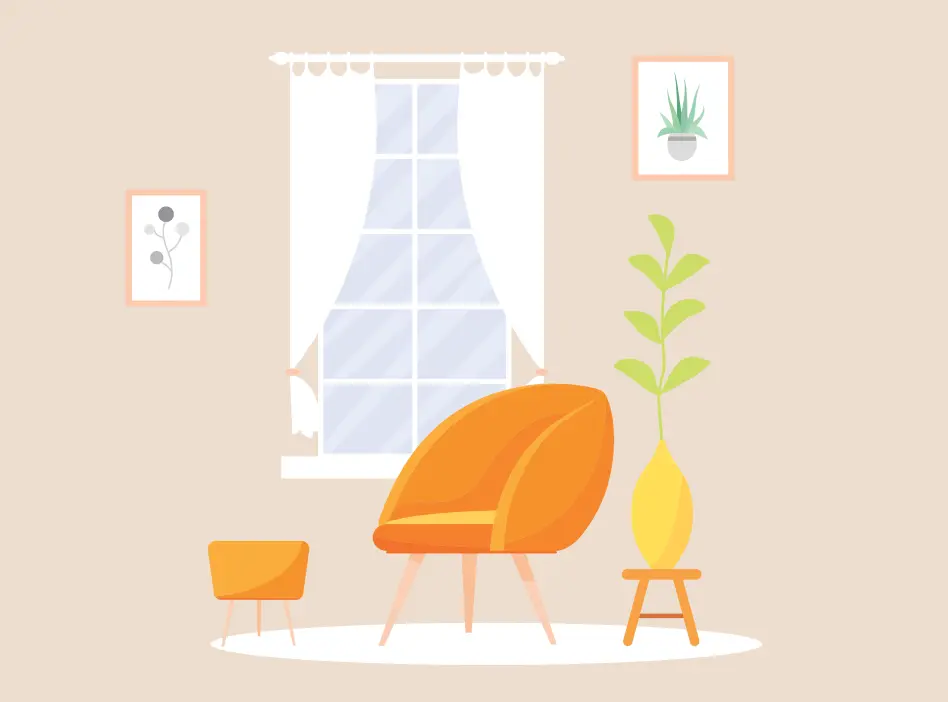

Компанія "Мебельмастер" надає послуги зі збирання корпусних меблів для дому та офісу в найкоротші терміни. Ми забезпечуємо чітке дотримання всіх інструкцій, мінімальний час виконання роботи та максимальну увагу до деталей. У нас працюють досвідчені фахівці, які пройшли спеціальне навчання і знають усі нюанси роботи з меблями. Зателефонувавши нам, ви отримаєте швидку консультацію та прорахунок вартості робіт.
Чому обирають Мебельмастер: переваги роботи з професіоналами
Обираючи "Мебельмастер", клієнти отримують низку переваг: оперативність, гарантію якості, доступні ціни та зручність замовлення. Ми цінуємо ваш час та комфорт, тому пропонуємо індивідуальний підхід до кожного клієнта. Працюючи з нами, ви можете бути впевнені, що кожна деталь меблів буде зібрана та встановлена правильно, що дозволяє уникнути майбутніх неполадок та ремонту.
Етапи збирання корпусних меблів: від виклику майстра до встановлення
Наш процес збирання меблів складається з кількох основних етапів: консультація, виїзд майстра, збірка та встановлення меблів. Після звернення клієнта ми обговорюємо всі деталі, узгоджуємо час приїзду майстра та плануємо роботу. Під час виконання завдання майстер дотримується всіх технічних вимог, забезпечуючи надійність конструкції та безпеку використання. Ми гарантуємо відповідальний підхід на кожному етапі, щоб ваші меблі були встановлені бездоганно.
Поради від Мебельмастер: як підготуватись до збірки меблів вдома
Щоб забезпечити максимально ефективну та швидку роботу майстра, важливо підготувати простір для збирання. Переконайтесь, що є достатньо місця для розташування деталей, приберіть зайві речі та підготуйте всі необхідні інструменти, якщо вони у вас є. Хоча наші спеціалісти завжди приїжджають з усім необхідним, підготовка приміщення допоможе прискорити процес та уникнути зайвих незручностей.
Секрети правильної збірки корпусних меблів: професійний підхід
Збирання корпусних меблів потребує навичок, уважності та певних технічних знань. Майстри "Мебельмастер" знають усі тонкощі процесу — від підготовки місця, точного дотримання інструкцій до використання правильних кріплень та інструментів. Це забезпечує не тільки довговічність конструкції, але й естетичний вигляд меблів у вашій оселі.
Гарантії якості
Компанія "Мебельмастер" надає гарантію на всі виконані роботи. Ми впевнені у кваліфікації наших майстрів, які використовують лише перевірені методи та якісні інструменти для збирання меблів. Наша мета – це задоволення клієнта та впевненість у тому, що меблі прослужать довгі роки.
Контакты
Адрес: м. Київ, вул. Прикладна, 15
Телефон: +38 (044) 123-45-67
Мобільний: +38 (067) 765-43-21